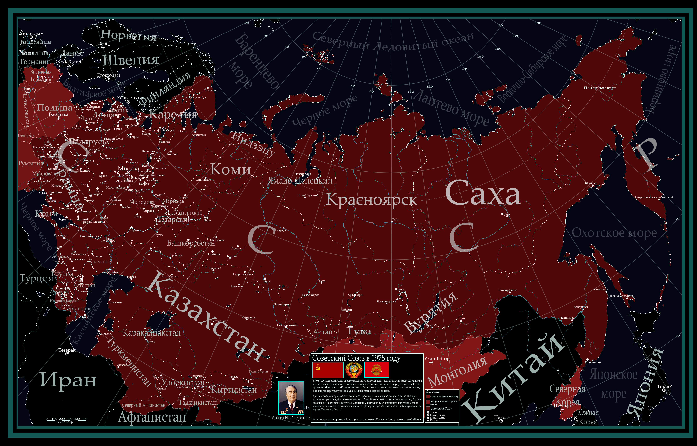
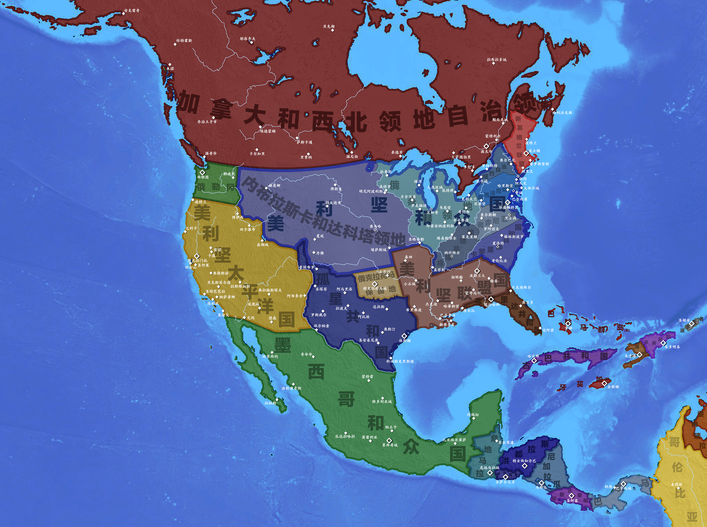

Alternate History Maps
Project In Detail
This is a main hobby of mine and also the most time-consuming one. I have made many different maps regarding different points of view, countries, and alternate history storylines. I started making maps since 2024 and I have kept on creating them ever since. The tool I frequently use is Adobe Photoshop, though I am also willing to hand draw them on my portable device.
Topics of the alternate history maps vary from different nations, different time, different worlds, and last but not least different planets.
Click on different maps to view them in full size.

Created in 2026


Created in 2026


Created in 2026